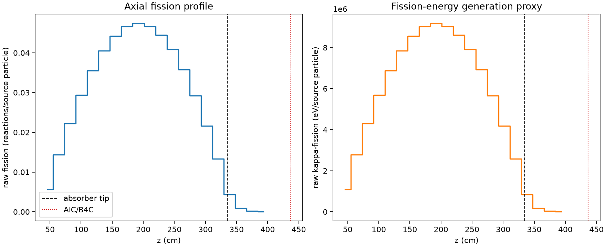
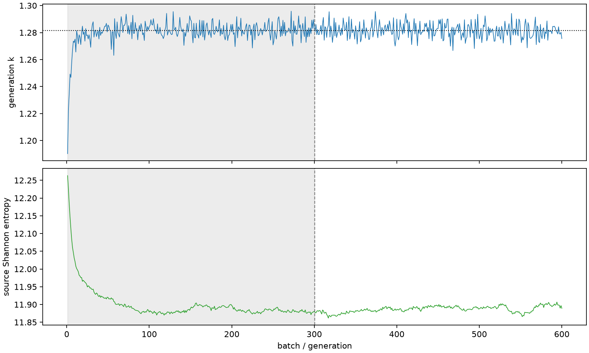

| field | value |
|---|---|
| experiment | V2-STAGE_256_OGRENCI_01-0028 |
| k | 1.2815946457477603 |
| MC standard error | 0.00018348549949824991 |
| seconds | 964.1247129969997 |
| acceptance | not_assessed |
| convergence | review_required |
Completed is output integrity only; physical and statistical review required. Zero tallies do not prove zero production or zero uncertainty.
| diagnostic | value |
|---|---|
| geometric fuel voxels | 5280 |
| zero fission tally voxels | 0 |
| low signal fuel voxels | 248 |
| low signal fission share | 8.433949949531643e-05 |
| low signal kappa share | 8.436961545951365e-05 |
| important fission share | 0.9500420484984192 |
| previous filter included | 5032 |
| duration estimate s | 1562.5173488400023 |
| actual minus estimate s | -598.3926358430026 |
| fission relative MC error | statistics |
|---|---|
| all_geometric_fuel | {"voxels": 5280, "positive_mean_voxels": 5280, "zero_mean_voxels": 0, "undefined_relative_error_voxels": 0, "median": 0.010713009021532289, "p95": 0.16984394876061432, "maximum": 0.49992486287634025} |
| low_signal | {"voxels": 248, "positive_mean_voxels": 248, "zero_mean_voxels": 0, "undefined_relative_error_voxels": 0, "median": 0.24657391294824865, "p95": 0.3422656458010407, "maximum": 0.49992486287634025} |
| important_95pct | {"voxels": 3664, "positive_mean_voxels": 3664, "zero_mean_voxels": 0, "undefined_relative_error_voxels": 0, "median": 0.009429301667430733, "p95": 0.014594277864755523, "maximum": 0.018639918557024522} |
| outside_previous_filter | {"voxels": 248, "positive_mean_voxels": 248, "zero_mean_voxels": 0, "undefined_relative_error_voxels": 0, "median": 0.24657391294824865, "p95": 0.3422656458010407, "maximum": 0.49992486287634025} |
| kappa_fission relative MC error | statistics |
|---|---|
| all_geometric_fuel | {"voxels": 5280, "positive_mean_voxels": 5280, "zero_mean_voxels": 0, "undefined_relative_error_voxels": 0, "median": 0.010702163370122232, "p95": 0.16950974330489346, "maximum": 0.49936647665587947} |
| low_signal | {"voxels": 248, "positive_mean_voxels": 248, "zero_mean_voxels": 0, "undefined_relative_error_voxels": 0, "median": 0.24627876253474068, "p95": 0.34179246729897755, "maximum": 0.49936647665587947} |
| important_95pct | {"voxels": 3664, "positive_mean_voxels": 3664, "zero_mean_voxels": 0, "undefined_relative_error_voxels": 0, "median": 0.009419151341923821, "p95": 0.014579721016839905, "maximum": 0.018619151462850873} |
| outside_previous_filter | {"voxels": 248, "positive_mean_voxels": 248, "zero_mean_voxels": 0, "undefined_relative_error_voxels": 0, "median": 0.24627876253474068, "p95": 0.34179246729897755, "maximum": 0.49936647665587947} |
| axial bin | fission share | kappa-fission share |
|---|---|---|
| 1 | 0.010865329961715313 | 0.01086577576501504 |
| 2 | 0.02750748356801861 | 0.027507466409976852 |
| 3 | 0.0424269104384086 | 0.0424267977143315 |
| 4 | 0.056184884429890974 | 0.056184554903494575 |
| 5 | 0.06782693636320482 | 0.06782674148468397 |
| 6 | 0.07746255893842498 | 0.07746236830062664 |
| 7 | 0.08448991624143405 | 0.0844897907872118 |
| 8 | 0.08903916571050992 | 0.08903885679130706 |
| 9 | 0.0905312542211299 | 0.09053114139879627 |
| 10 | 0.08913139460047355 | 0.08913114322143952 |
| 11 | 0.08504915423898134 | 0.08504894551159416 |
| 12 | 0.07809926703582519 | 0.07809908117122709 |
| 13 | 0.06834296248663542 | 0.06834272489183195 |
| 14 | 0.055764527717867246 | 0.05576436069873449 |
| 15 | 0.0412891292136223 | 0.04128919404570685 |
| 16 | 0.02544748932071948 | 0.025447519438027713 |
| 17 | 0.00824461425854106 | 0.00824583988188316 |
| 18 | 0.0017797822844511648 | 0.0017802917823066579 |
| 19 | 0.0004278422663677982 | 0.0004279767234390559 |
| 20 | 8.939670377827062e-05 | 8.942907836551567e-05 |
Histories include the inactive-to-active transition at batch 300. kappa-fission approximates fission energy production, not total heat deposition.

